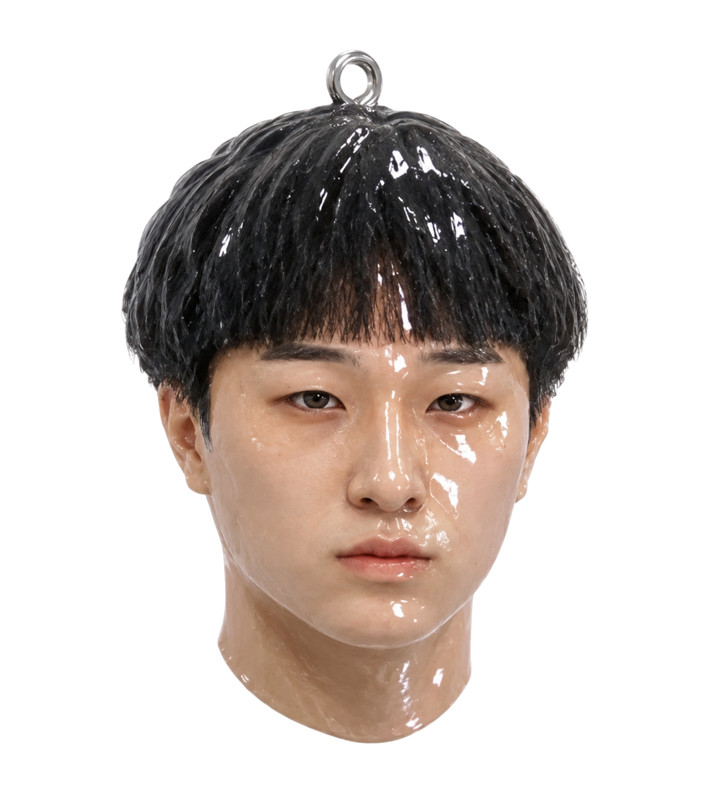
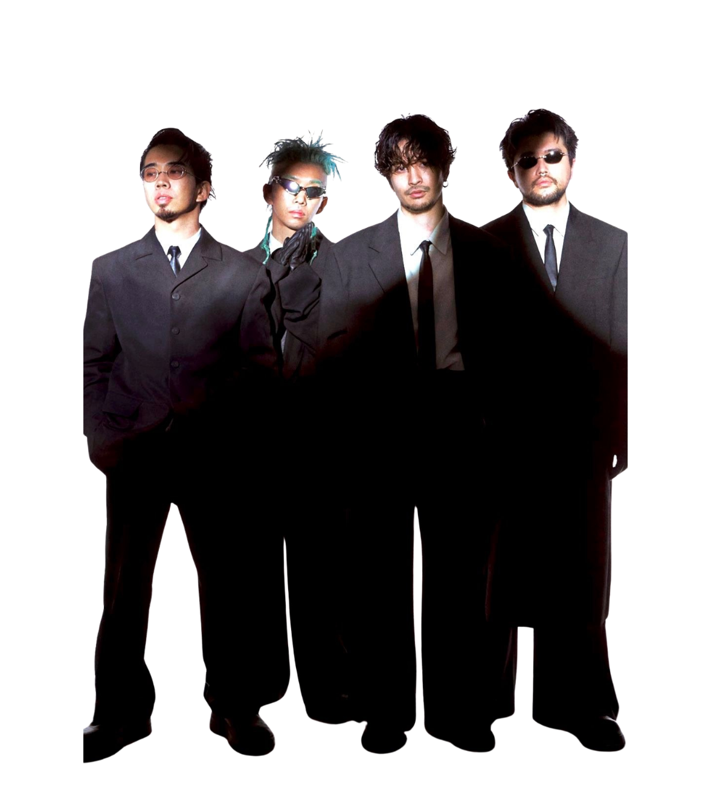
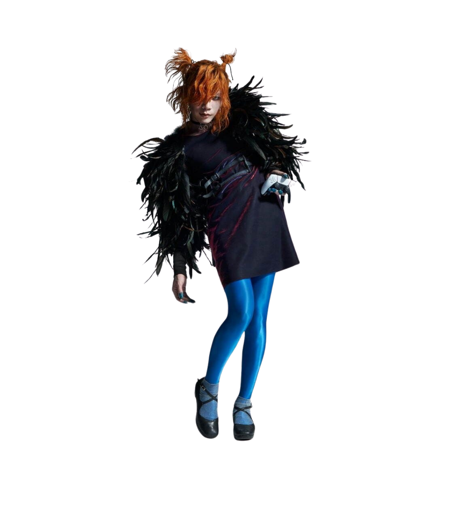
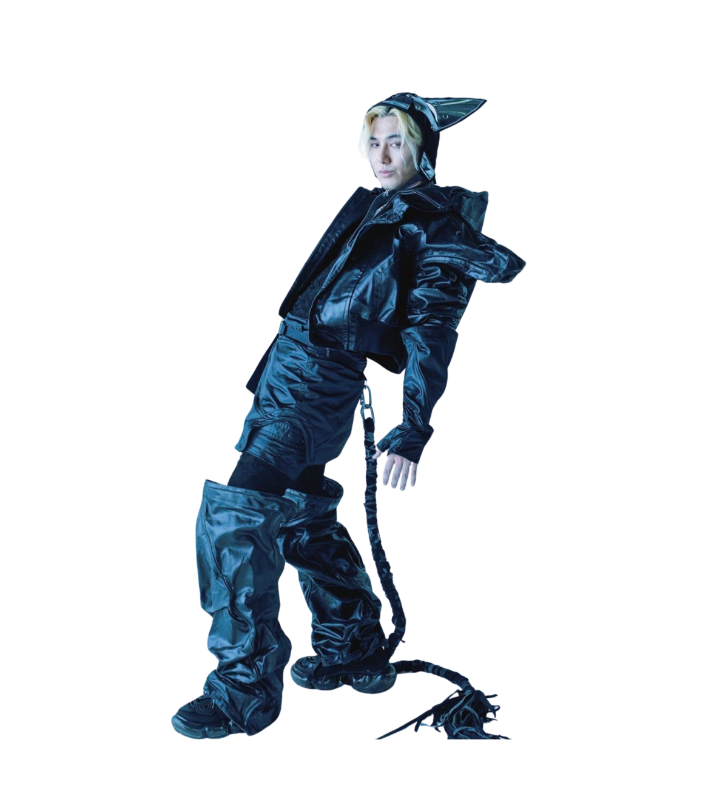
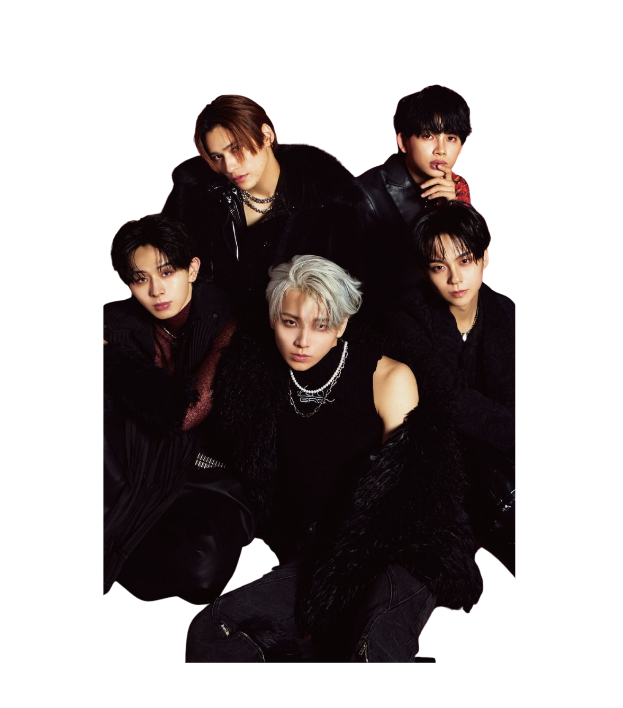
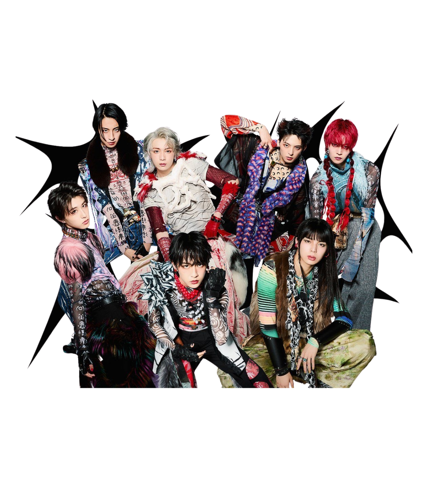
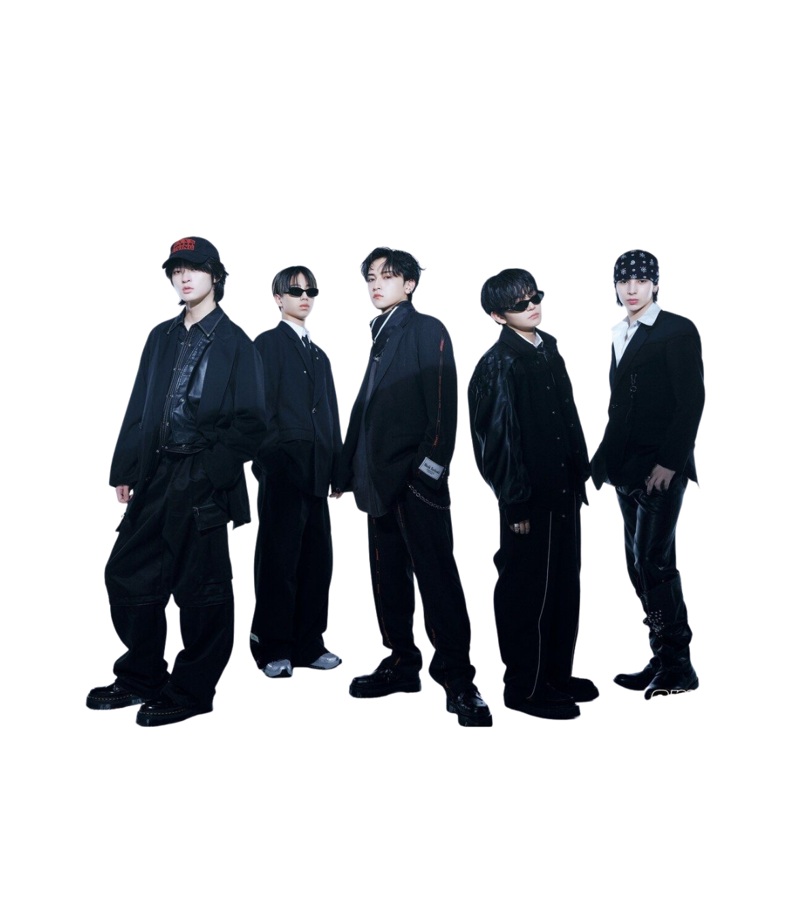
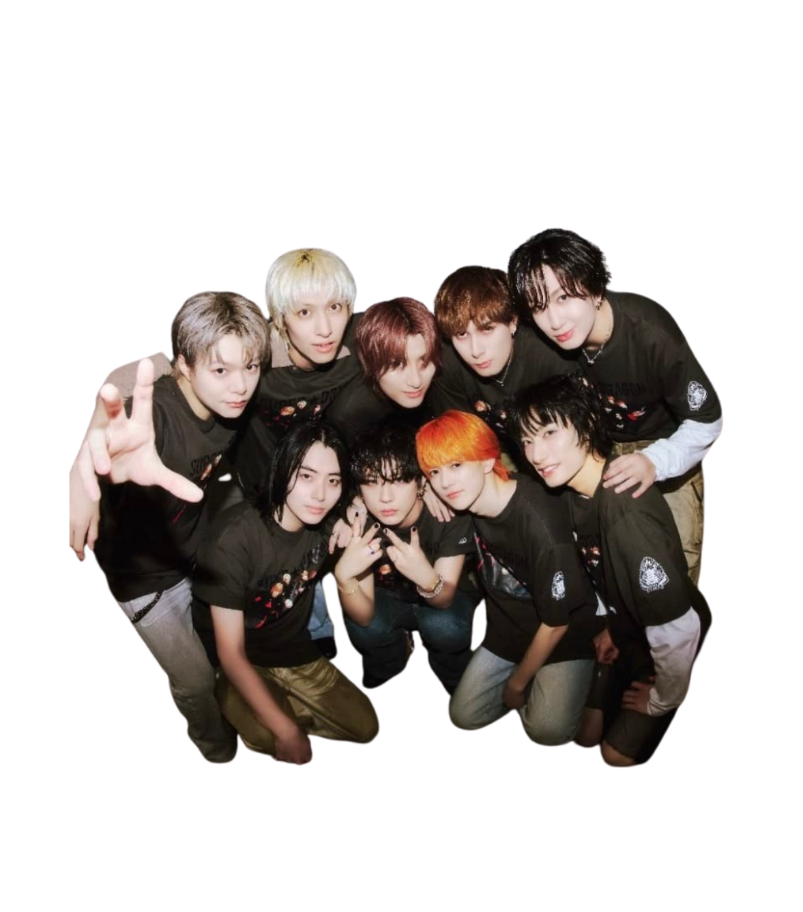

// DICTION-041 // DANSAN SPECIMEN
PATTERN DESIGN MANUAL (2026)
視覺の覚醒
人類の疲弊，在這裏全部解放しませんか？

SPECIMEN-0910 // HOVER TO MUTATE
SUB-SECTION A
MUTUAL RECOGNITION
擬態本體剖繪
- 代號 / NAME 丹三 / DANS3an* (張彤)
- 編寫日期 / DATE 2005.09.10 // 21 YEARS
- 據點機構 / HOST 南臺科技大學 視覺傳達設計系 大三
- 擬態自述 / LOG 我為甚麼是我
- 解剖工具 / TOOLS 甚麼都不會
- 毒性特徵 / TRAIT 你覺得呢
STATUS: NON-COMMERCIAL / ACADEMIC
// SECTION 02: PRISMATIC LINEUP
我喜歡的人們
7 ENTITIES OBSERVED // 滑鼠懸停聚焦彩虹光譜變色

01. King Gnu
02. 米津玄師
03. 藤井風
04. ON'O
05. 龍宮城
06. Starglow
07. SUPER★DRAGON
LINEUP LOADED // 07 SPECIMENS MUTUALLY RECOGNIZED.
我
有
病
有
病
別
跟
我
說
話
跟
我
說
話
集 集 樂
★ 怎麼要放棄了嗎？！ // 百分之百不中獎 // 人類人累人淚 ★
點擊上方孔洞戳破蓋印 (0/15)
【集滿 15 個印章即可兌換：繼續趕作業一次】
© 2026 DANS3an* // 2005.09.10 // ALL RIGHTS RESERVED.